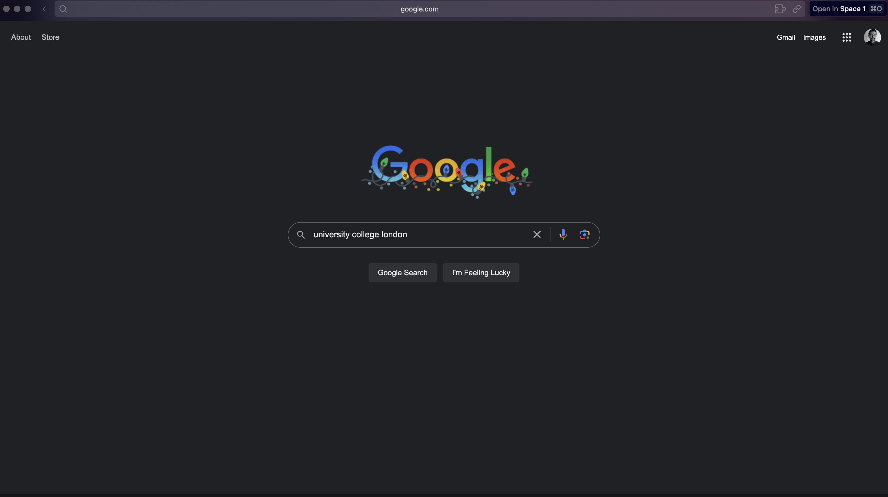
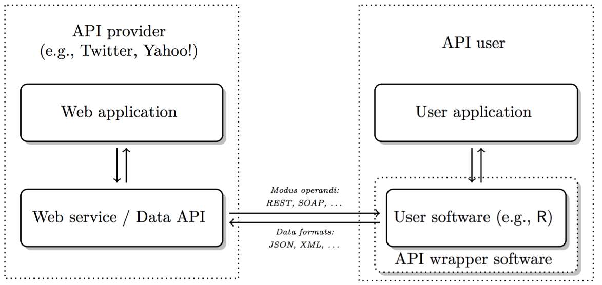
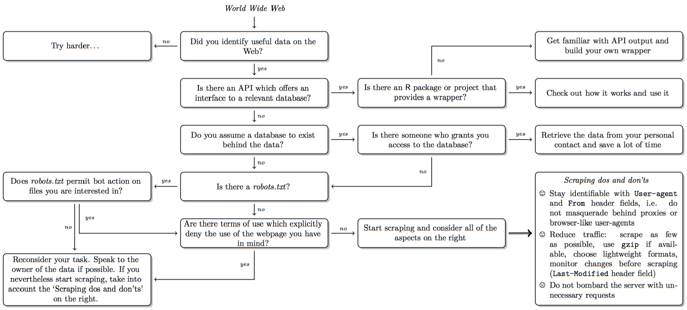
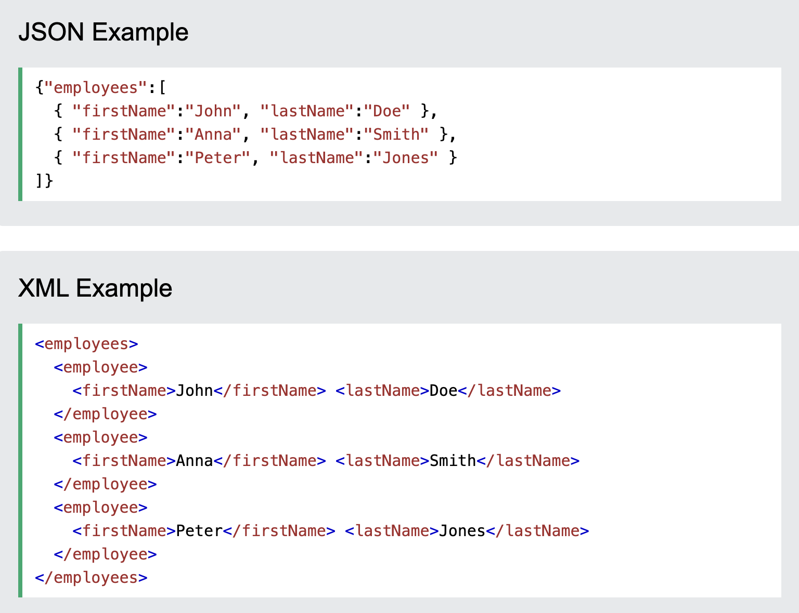
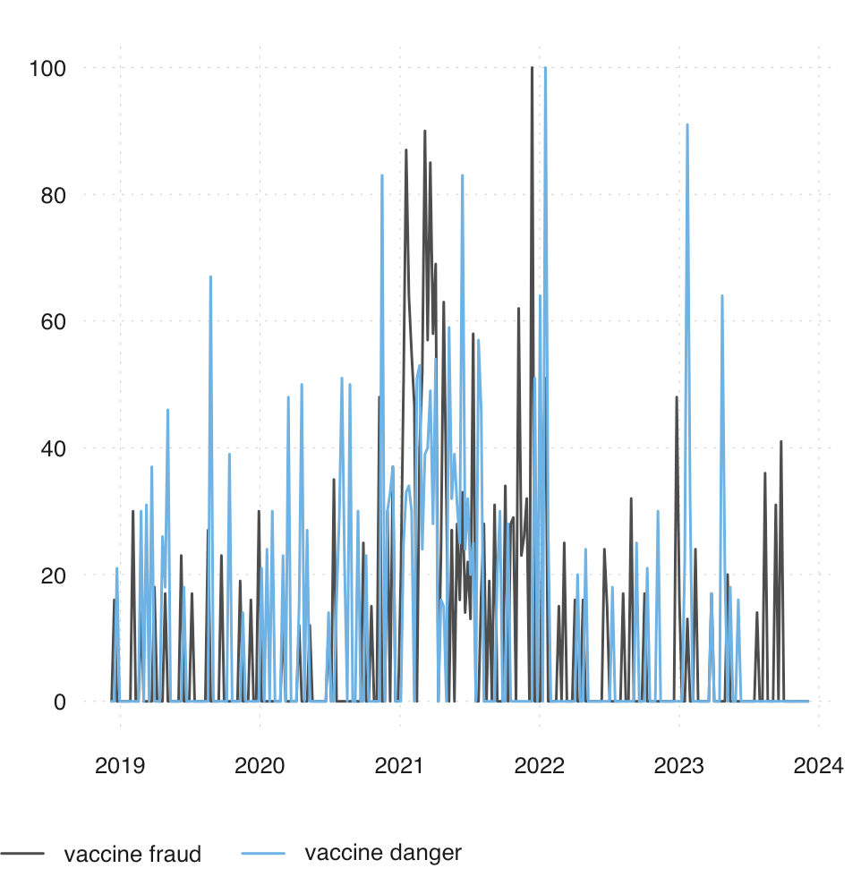
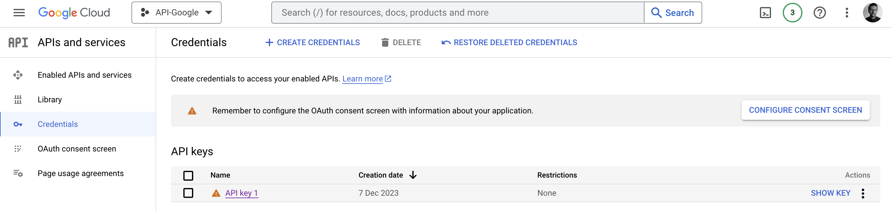

🗓️ Week 09
Working with APIs
05 Dec 2025
Web APIs
What is an API?
- API stands for Application Programming Interface.
- a set of rules and procedures that facilitate interactions between computers and their applications
- A very common type of API is the Web API
- allows users to query a remote database over the internet
- Web APIs take on a variety of formats
- Representational State Transfer or REST
- we can use them to query databases using URLs
RESTful Web APIs
- They are all around you
- consider a simple Google search:

- Ever wonder what all that extra stuff in the address bar was all about?
- the full address is Google’s way of sending a query to its databases requesting information related to the search term “university college london”
Anatomy of API

- API = Application Programming Interface
- a set of structured http requests that return data in a lightweight format
- HTTP = Hypertext Transfer Protocol
- how browsers and e-mail clients communicate with servers
When or why we should use APIs
Advantages:
Pure data collection: avoid malformed HTML, no legal issues, clear data structures
Standardised data access procedures: transparency, replicability
Robustness: benefits from wisdom of the crowds
Disadvantages:
They’re not always available
Dependency on API providers
Lack of natural connection to R
Decision in scraping

Types of APIs
RESTful APIs: queries for static information at current moment (e.g. user profiles, posts, etc.)
Streaming APIs: real time data (e.g. new tweets, weather alerts)
APIs often have extensive documentation:
written for developers, what to look for: endpoints and parameters: API Documentation
most APIs are rate-limited: restrictions on number of API calls by user/IP address and period of time
commercial APIs may impose a monthly fee
List of APIs in case you need inspiration
Rate-limit your requests (sys.sleep() in loop
(Reponse) Formats: JSON
- Response often in JSON or XML format
- ‘http_type(#)’: Check format
- JSON (Javascript Object Notation, *.json)
- Structure: Data stored in key-value pairs. Why? Lightweight, more flexible than traditional table format
- various data types possible (strings, numbers etc.)
- curly brackets embrace objects; square brackets enclose arrays (vectors)
- objects ({“name”: “peter”,“phone”:“397483”})
- arrays ([1910, 1911])
- ‘jsonlite’ package: Use fromJSON function to read JSON data into R
- many packages have their own specific functions to read data in JSON format
(Reponse) Formats: XML
- XML (eXtensibleMarkupLanguage, *.xml)
- plain text format like JSON
- syntax of choice for many newly designed document formats (Word documents!)
- looks like HTML but has purpose to store data: Markup (mostly tags) & content
Json vs XML:

Getting API Access
Most APIs requires a key or other user credentials before you can query their database
Getting credentialised with a API requires that you register with the organization
Most APIs are set up for developers, so you will likely be asked to register an application
Once you have successfully registered, you will be assigned one or more keys, tokens, or other credentials that must be supplied to the server as part of any API call you make

Using APIs in R
There are two ways to collect data through APIs in R:
- Plug-n-play packages:
Many common APIs are available through user-written R Packages. These packages offer functions that “wrap” API queries and format the response. These packages are usually much more convenient than writing our own query
- Writing our own API request
If no wrapper function is available, we have to write our own API request and format the response ourselves using R. This is trickier, but definitely doable
Web API Examples
Collecting Google Trends
Setup:
- The API is provided by Google
- with Google Trends, one gets access to a largely unfiltered sample of actual search topics (up to 36h before your search) and a filtered and representative sample for search topics older than 36 hours starting from the year 2004
- The data is anonymised
- can be obtained from different Google products like “Web search”, “News”, “Images”, “Shopping” and “Youtube”
- can be filtered by different categories to get the data for the correct meaning of the word
- aggregated, which means that the searches of all cities/regions are aggregated to the federal state level, country level or world level
Google Trends Data
The results you get are a standardised measure of search volume for single search terms, a combination of search terms using operators (see below), or comparisons (one input in relation to the other inputs) over a selected time period
Google calculates how much search volume in each region a search term or query had, relative to all searches in that region. Using this information, Google assigns a measure of popularity to search terms (scale of 0 - 100), leaving out repeated searches from the same person over a short period of time and searches with apostrophes and other special characters]
No quotation marks (e.g. Humanitarian crisis) You get results for each word in your query Quotation marks (e.g. “Humanitarian crisis”) You get results for the coherent search phrase Plus sign (e.g. humanitarian +crisis) Serves as function of an OR-operator Minus sign (e.g. humanitarian -crisis) Excludes word after the operator
API access in R
- It can be used without an API key by anyone for free directly in the internet browser
Example using httr package:
library(httr)
GET("https://trends.google.com/trends/explore",
query=list(q = "Humanitarian",geo = "GB"))- but just html-output, I recommend to use the
gtrendsRpackage
Using gtrendsR Package
- Visualising google search activity for the word “vaccine fraud” and “vaccine danger” in UK

data("countries") # get abbreviations of all countries to filter data
data("categories") # get numbers of all categories to filter data
#Combination using dplyr and ggplot
trend <- gtrends(keyword="vaccine", geo=c("GB"), time = "2021-01-01 2021-12-30", gprop="web")
trend_df <- trend$interest_over_time
trend_df <- trend_df %>%
mutate(hits = as.numeric(hits), date = as.Date(date)) %>%
replace(is.na(.), 0)
ggplot(trend_df, aes(x=date, y=hits, group=geo, col=geo)) + geom_line(size=2) +
scale_x_date(date_breaks = "2 months" , date_labels = "%b-%y") +
labs(color= "Countries") +
ggtitle("Frequencies for the query -vaccine harm- in the period: 2021-01-01 - 2021-12-3")
#if gtrendsR package doesn't work, try trendecon package
library(trendecon)
x <- ts_gtrends(keyword = c("vaccine fraud", "vaccine danger"), geo = c("GB"), time = "today+5-y",
retry = 5,
wait = 10)
tsbox::ts_plot(x)Using Google Maps API
ggmapuses Google Maps behind the scenes, so you’ll need an active Google Cloud Platform account (see here if you cannot figure out)- enable the following APIs under APIs and Services – Library:
- Maps JavaScript API
- Maps Static API
- Geocoding API
- enable the following APIs under APIs and Services – Library:

How to use ggmap with Google Maps API
Using OpenStreetMap API
OpenstreetMap (OSM) is a free and open map of the world created largely by voluntary contribution of millions of people around the world
OSM serves two APIs, namely Main API for editing OSM, and Overpass API for providing OSM data
OSM data is stored as a list of attributes tagged in key - value pairs of geospatial objects (points, lines or polygons)
For example, for charities, the key is “office”, and the value is “charity”
- access an extensive list of key-value pairs through OSM Wiki Map features
Mapping charities in London through OSM
The first step is to define a bounding box of the geographical area we are interested in. It is defined by four geographic coordinates, representing the minimum and maximum latitude and longitude of the area
Looking into the osmdata object
- In osm_points and osm_polygons you see various information related to charities. It’s because the information about restaurants are entered either as restaurants and polygons
head(london_rst$osm_polygons)$name
#select name and geometry for charities
rst_osm_points <- london_rst$osm_points %>% #select point data from downloaded OSM data
select(name, geometry) #for now just selecting the name and geometry to plot
rst_osm_polygons <- london_rst$osm_polygons %>%
select(name, geometry)
london_charities <- rbind(rst_osm_points, rst_osm_polygons)- OpenStreetMap found 729 observations as charities
Visualising locations of charities
Lab exercise and further materials
- Visualise location of pubs in Greater London, using OpenStreetMap API
Further texts:
Bonus Tutorial: Spotify API:
SOCS0100 – Computational Social Science